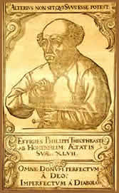

Biografia
Na aldeia de Einsiedeln, Suíça,
em 17 de dezembro de 1493 (ou em 10 de novembro do mesmo ano;
há uma divergência histórica neste ponto),
nasceu Phillipus Aureolus Theoperastus Bombastus von Hohenheim.
Filho de Wilhelm Bombast, médico e alquimista; e neto de
Georg Bombast von Hohenheim, Grão Mestre da Ordem dos Cavaleiros
de São João, o jovem de baixa estatura, gago e corcunda,
aos três anos de idade, foi atacado por um porco que lhe
mutilou o genital, fato que somado a sua aparência física,
proporcionou-lhe um complexo de inferioridade que seguiu por toda
a vida.
Até
mesmo seu extenso nome é alvo das discordâncias.
Possivelmente, o nome Theoperastus é uma homenagem ao famoso
pensador grego. Já o nome Phillipus (ou Phelix), por vontade
própria e motivos desconhecidos, foi acrescentado ao longo
da vida; e a alcunha, Aureolus, é uma alusão "divina",
dada por seus admiradores ao longo dos anos.
Na infância, Theoperastus acompanhava seu
pai viajando pelos povoados da terra natal, observando a manipulação
das ervas usadas para curar enfermos daquela região. Dessa
forma, passou a apreciar a atividade paterna. As primeiras noções
sobre Teologia, Alquimia e Latim, foram transmitidas por seu pai.
Ainda muito jovem, foi enviado à escola de Beneditinos
do Mosteiro de Santo André. Lá, conheceu o notável
alquimista, Eberhard Baumgartner.
Formou-se nos estudos tradicionais de sua época
e seguiu o caminho profissional de seu pai, estudando medicina
na cidade de Viena e concluindo em Ferrara. A partir deste momento,
deu início as suas viagens, passando por Áustria,
Egito, Hungria, Tartária, Arábia e Polônia.
Em
Salzburg, Áustria, tentou estabelecer-se como médico,
mas foi expulso da cidade porque simpatizou com agricultores rebeldes.
Recebeu o título de cidadão em Strasburg e partiu
para Basel. Após vários conflitos com colegas médicos
e farmacêuticos e o próprio conselho de medicina
da cidade, Theoperastus recebeu uma ordem de prisão em
1528, forçando sua fuga da cidade. Em Wurzburg, aprendeu
com outros sábios a manipulação de produtos
químicos, principalmente com Tritêmio, célebre
abade e ocultista do Convento São Jorge.
Em 1536, publicou Die Grosse Wundartzney,
(Cirurgia Maior), uma coleção de tratados
médicos. Escreveu ainda trinta e dois artigos e ilustrações,
com previsões de eventos até o ano 2106. Para que
seus escritos tivessem uma penetração maior, redigiu
todos em alemão, e não em latim, como era o costume.
Viajou pelo país como uma espécie
de médico-cigano, e ficou conhecido como "o médico
dos pobres" até voltar para Salzburgo em 1540, convidado
pelo bispo da cidade. Faleceu em 24 de setembro de 1541 com apenas
47 anos. A causa de sua morte não foi esclarecida. Uma
hipótese é que tenha sido vítima de feridas
infeccionadas, ocasionadas quando, embriagado, sofreu uma queda
numa taberna. O corpo foi velado na igreja de São Sebastião
e, conforme seu último desejo, foram entoados os salmos
bíblicos 1, 7 e 30.
Obras
Há diversos vácuos e incoerências
na biografia deste personagem, também conhecido como Hohenheim.
Estas poucas informações são os registros
históricos mais confiáveis da vida de Paracelso,
que teria adotado (ou recebido de seu pai) este apelido por ser
"superior a Celso", famoso médico romano da Antigüidade.
Sua vida pautada pelas polêmicas e conturbações
que sua personalidade pouco adequada àqueles tempos lhe
infligia. Esta frase de sua autoria exemplifica: "Ponderei
comigo mesmo que, se não existissem professores de Medicina
neste mundo, como faria eu para aprender essa arte? Seria o caso
de estudar no grande livro aberto da Natureza, escrito pelo dedo
de Deus. Sou acusado e condenado por não ter entrado pela
porta correta da Arte. Mas qual é a porta correta? Galeno,
Avicena, Mesua, Rhazes ou a natureza honesta? Acredito ser esta
última. Por esta porta eu entrei, pela luz da Natureza,
e nenhuma lâmpada de boticário me iluminou no meu
caminho".
Além da medicina, era versado em filosofia
e política. Mas seus escritos estão relacionados
principalmente com a sua profissão e chegam a mais de 8
mil páginas. Porém, apenas uma pequena parte é
conhecida e estudada. A linguagem aplicada em sua obra é
alegórica e passível de interpretação,
um recurso utilizado para que não pudesse ser acusado de
feitiçaria pelo implacável mecanismo
inquisitório medieval. Conta-se que certa vez, Paracelso
queimou em público diversos livros de Galeno e Avicena,
dizendo: "Que toda esta miséria possa ir pelos
ares como fumaça".
Médico
e Místico
Até
mesmo a forma de exercitar seu ofício era contestada. Acreditava
ele, que a função de um médico ia além
do diagnóstico e receituário convencional; era necessário
um estudo do paciente e uma compreensão da doença
em aspectos como a astrologia,
alquimia, magia e outras variações esotéricas.
A medicina daquele tempo, baseada no pensamento
do filósofo Hipócrates, acreditava que as doenças
eram causadas por mau funcionamento dos fluídos do corpo
humano: sangue, catarro, bílis preta e bílis amarela.
Paracelso contestou e simplificou este conceito. Segundo ele,
os seres materiais têm origem em quatro elementos: terra,
água, ar e fogo; e três substâncias: enxofre,
mercúrio e sal. Os primeiros são realidades materiais
compreendidas dinamicamente. Enquanto os outros são modalidades
de comportamento da natureza. Ou seja, o enxofre é combustível,
o mercúrio é volátil e o sal é resistente
ao fogo. Portanto, a saúde é o equilíbrio,
e a doença é o desequilíbrio de todas as
energias presentes no ser humano, tanto no corpo físico
como espiritual.
De acordo com Paracelso, a cura apóia-se
em quatro bases distintas: filosofia, astronomia, alquimia e virtus.
A filosofia significa: abrir-se ao conjunto das forças
naturais, observar essas forças invisíveis na penetração
da realidade total e perceber o invisível no visível.
A astronomia explica as influências dos astros na saúde
e nas enfermidades. A alquimia torna-se útil no preparo
dos medicamentos. O termo virtus é uma alusão a
honestidade do médico que, através do raciocínio
de Paracelso, é uma pessoa em constante evolução
e aperfeiçoamento, e deve reconhecer a ação
da natureza invisível no doente ou, em se tratando do remédio,
como atua no plano visível. Assim, o conhecimento médico
tem menos a ver com conhecimento intelectual do que com a intuição.
Paracelso fazia freqüentes associações
entre Magia e Imaginação. "O visível
esconde o invisível, mas apesar disso conseguimos o invisível
apenas através do visível", dizia. Nesse
caso, magia significa a ação direta sobre as pessoas
e todos os seres, sem ajuda da matéria. Ou seja, o mago
é capaz de causar efeitos físicos sem ajuda física.
No livro Paracelso - Alquimista, Químico, Pioneiro
da Medicina, o historiador e filósofo Lucien Braun,
cita: "toda natureza invisível se movimenta através
da imaginação. Se a imaginação fosse
forte o suficiente, nada seria impossível, porque ela é
a origem de toda magia, de toda ação através
da qual o invisível (de um ou outro modo) deixa seu rastro
no visível. A energia da verdadeira imaginação
pode transformar nossos corpos, e até influenciar no paraíso...".
Além disso, o médico suíço
reconheceu que a fé fortalece a imaginação.
Isso inclui as curas milagrosas atribuídas a ele e que
não foram apenas resultado dos medicamentos, mas serviram
para influenciar conscientemente a ação da imaginação
do próprio paciente, de modo que agisse diretamente no
desejo de ser curado. Atualmente, há na medicina, o chamado
placebo, uma substância sem qualquer efeito farmacológico,
prescrita para levar o doente a experimentar alívio dos
sintomas pelo simples fato de acreditar nas propriedades terapêuticas
do produto. De certa forma, pode-se entender que Paracelso já
fazia uso deste recurso há mais de 500 anos. Outro fator
interessante de seu raciocínio, é que ele também
associava as características exteriores de uma planta a
sua função medicinal. Por exemplo, folhas em forma
de coração foram recomendadas para doenças
cardíacas.
Seu Legado
Personagens como Van Helmont e Friedrich Franz
Mesmer deram continuidade aos trabalhos de Paracelso. O pensamento
e a atitude do sábio suíço influenciaram
não apenas as ciências e o ocultismo de sua época,
mas até hoje são lembrados e utilizados como base
de estudos modernos. Até mesmo durante uma epidemia de
cólera, em 1830, seu túmulo foi objeto de peregrinação.
Sabe-se que Paracelso nasceu no ano de 1493, o
dia e o mês ainda são discutíveis. Mas isso
não é tão importante, porque foi um homem
além de seu tempo, além das datas e do pensamento.
Seu legado de obras escritas e ensinamentos compõem o que
atualmente é chamado de Medicina Experimental. Formulou
os primeiros conceitos da homeopatia, farmacologia, medicina psicossomá-
tica, psicologia e bioenergética. Um médico esotérico
que, como todos os outros "não esotéricos",
tinha apenas um objetivo: prolongar a existência humana
na Terra.
Por
Spectrum